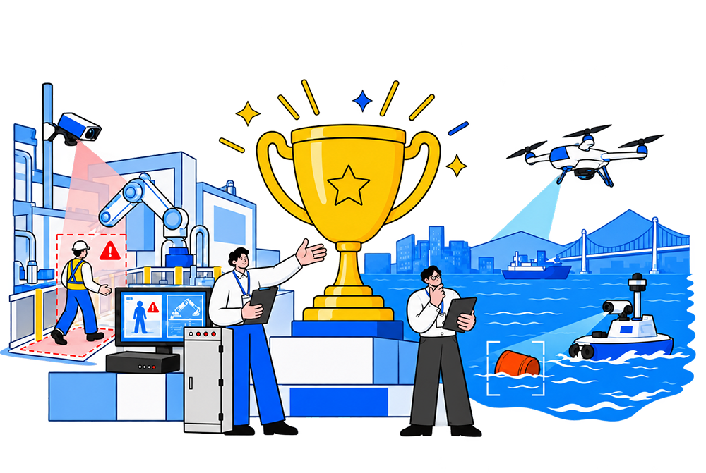
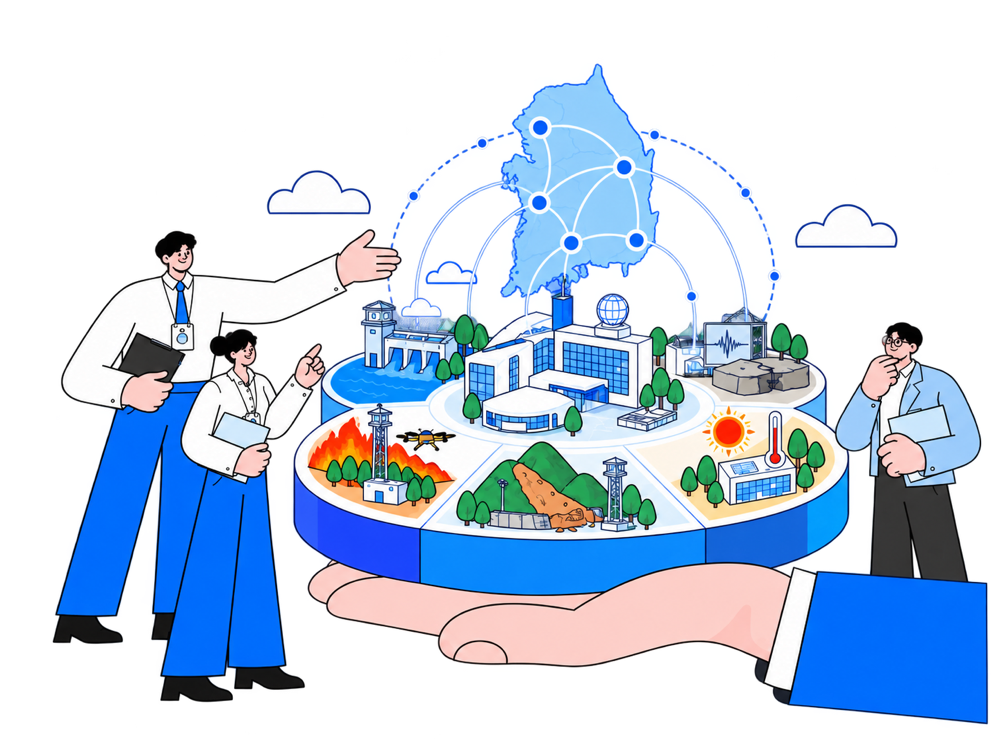
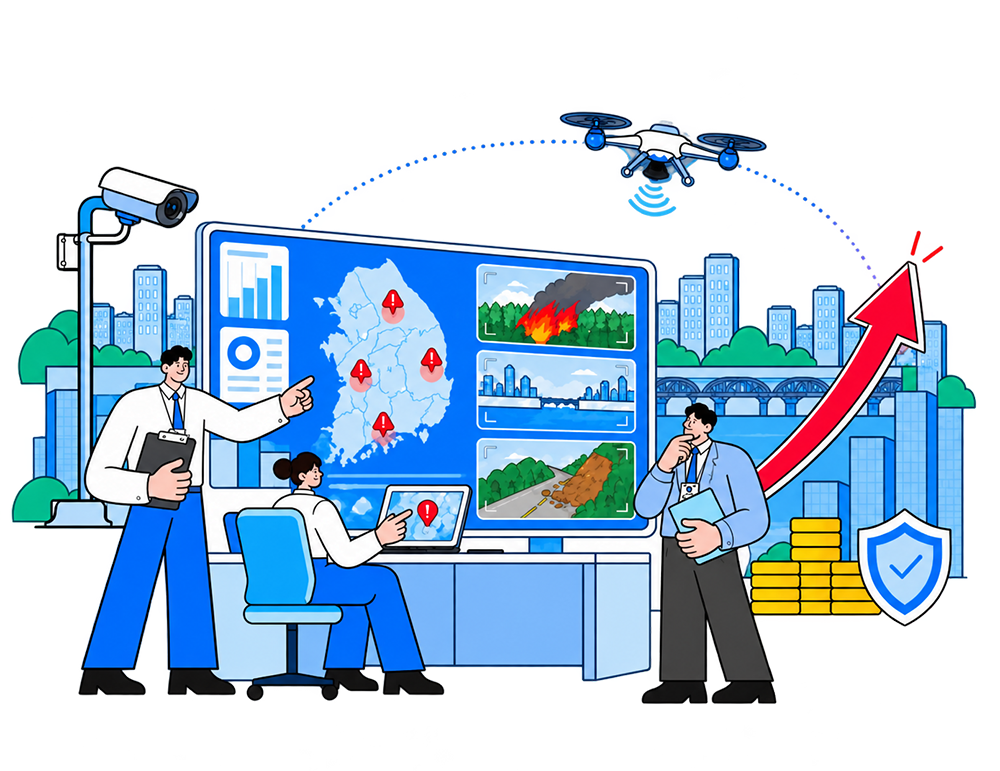

올해 하반기 재난안전산업을 움직인 정책들을 모았다. 베트남과 일본에서 열린 국제박람회에서 ‘재난안전기업 한국관’ 운영하여
중소기업의 해외 진출 지원하고, 우수 기술과 제품 8건이 안전기술대상을 거머쥐면서 기술 경쟁력을 입증했다.
전국 재난안전산업 진흥시설은 침수부터 폭염까지 5개소 체계가 완성됐다.
전년 대비 10.1% 늘어난 2027년 예산안에는 AI 기반 재난 대응 투자가 큰 폭으로 반영됐다.
산업의 흐름을 가늠할 4가지 정책 시그널을 살펴보자.
01•2026년 재난안전기업 한국관
(베트남 씨큐텍·일본 리스콘 도쿄)
재난안전기업, 베트남·일본 무대에서 수출
날개 달다
행정안전부는 올해 베트남 씨큐텍(9.9.~9.12., 하노이), 일본 리스콘 도쿄(9.30.~10.2., 도쿄)에 한국관을 운영하여 국내 재난안전기업의 해외 진출을 지원했다. 베트남에는 35개사가 참여해 AI 기반 재난 예·경보 시스템, 특수 소방차 등을 선보였다. 올해는 박람회 개최지가 하노이로 바뀌면서 공공조달시장과의 접점도 넓어졌다. 지난해 85억 원 규모의 무인 파괴 화재진압 방수차 수출계약 등 수출 성과를 거둔 것에 이어 올해도 930건의 비즈니스 상담을 통해 490억원 규모의 수출 계약을 논의하는 성과를 달성했다. 일본 리스콘 도쿄에는 23개사가 참여해 지진경보시스템, 화재 대응제품 등을 전시했다. 리스콘 도쿄 박람회에는 3년 연속 한국관을 운영하여 현지 재난안전시장에 한국관의 인지도를 높이고, 글로벌 바이어들과의 협력을 강화해 나가고 있다. 올해도 561건의 비즈니스 상담과 680억원 규모의 계약을 논의하는 성과를 거뒀다. 두 번의 박람회 모두 1대1 바이어 상담과 진출 전략 설명회, 구매·투자 설명회를 함께 운영해 우리 기업들이 해외 진출 기반을 마련할 수 있도록 밀착 지원했다.
해외 박람회 참여와 현지 네트워크 구축을 통해 우리나라 재난안전기업의 글로벌시장 진출 기반을 강화하고 수출 기회를 확대
2026 대한민국 안전기술대상 •02
공장에서 바다까지, 국민 안전 지킨
우수기술 8선
행정안전부가 우수한 재난안전 기술과 제품의 개발·보급을 촉진하기 위해 운영하는 ‘2026 대한민국 안전기술대상’ 수상작 8점을 8월 30일 최종 선정했다. 2015년 시작해 올해로 12회째를 맞은 이 상은 공모와 서면심사, 국민 참여 온라인 심사를 거쳐 기술의 중요도와 실용성을 평가한다. 대통령상은 AI 카메라로 사람을 감지해 0.25초 만에 위험 설비를 멈추는 오토아이티의 ‘HDS AI 기반 인체감지 안전관리 시스템’이, 국무총리상은 드론과 AI, 수상로봇을 결합해 해양 부유물 위험을 감지·대응하는 해양환경공단의 ‘AI 기반 수상로봇 통합관제 시스템’이 각각 차지했다. 이 외에도 지진에도 끊어지지 않는 내진 케이블 트레이, 건설현장 양중작업 위험 감지 장치, 불꽃·연기·온도를 한 번에 잡아내는 AIoT 화재 감지기 등 산업·생활 전반을 아우르는 6건의 행정안전부장관상이 함께 수여됐다.

03•재난안전산업 진흥시설 조성지원 사업
침수에서 폭염까지, 전국 5대
재난안전산업 거점 완성
행정안전부는 침수 특화(전북 군산), 지진 특화(경남 양산), 화재 특화(충남 홍성), 급경사지·산사태 특화(부산)에 이어 올해 울산 폭염 특화 진흥시설까지 선정하며 전국 5개 진흥시설 체계를 완성했다. 진흥시설은 산·학·연·관이 협력해 재난유형별 제품·기술의 성능시험·평가부터 연구개발(R&D), 국내외 판로개척까지 전 과정을 일괄 지원하는 안전산업 통합거점이다. 각 시설은 지역 전략산업과 연계해 3~4년간 최대 140억 원 내외의 국비·지방비를 지원받으며, 재난유형에 특화된 장비를 구축해 기업의 인증 비용 절감과 시장진출 확대를 돕는다. 올해 선정된 울산 폭염 특화 진흥시설은 2028년까지 3년간 132억 원을 투입해 실내·실외 폭염 환경 실증시스템 등 11종의 장비를 구축하며, 700여 개의 일자리와 804억 원 규모의 경제 효과가 기대된다.
재난유형별 전국 거점망이 완성되면서 재난안전 중소기업의 연구개발 기반이 두터워지고, 지역별 특화산업으로 성장할 수 있어요.

2027년도 행정안전부 예산안 •04
국민안전에 1조 8천억 원… 2027년 예산이
그리는 재난안전산업
행정안전부는 2027년도 예산안을 전년 대비 10.1% 증가한 84조 7,036억 원으로 편성하며 ‘AI민주정부 구현’과 ‘국민안전 강화’ 등 4대 핵심 분야에 집중 투자한다. 이 중 국민안전 분야에는 1조 8,102억 원이 편성돼 재해위험지역 정비(1조 1,579억 원), 재난복구비(2,001억 원), 재난안전통신망 운영(1,290억 원) 등 예방부터 대응까지 두루 지원한다. 집중호우 대비 우수유출 저감시설 설치 예산이 400억 원에서 430억 원으로, 마을 단위 위험요인 정비를 돕는 지역안전개선컨설팅은 56억 원에서 120억 원으로 늘었다. 특히 지방정부 CCTV 영상에 AI를 접목해 도시침수·산불·산사태 등 민간 개발이 어려운 영역의 위험 탐지 모델을 개발하는 ‘재난안전 AI 관제체계 구축’에 124억 원이 새롭게 투입된다. 재난 현장을 찍은 드론 영상을 중앙-지방정부가 실시간 공유하는 체계 강화에도 예산이 34억 원에서 60억 원으로 확대됐다.
AI 기반 재난 감지·대응 예산이 꾸준히 늘어나면서 관련 기술을 보유한 재난안전기업에 새로운 사업 기회가 열릴 수 있어요.
2027년 행정안전부 예산안 보러가기